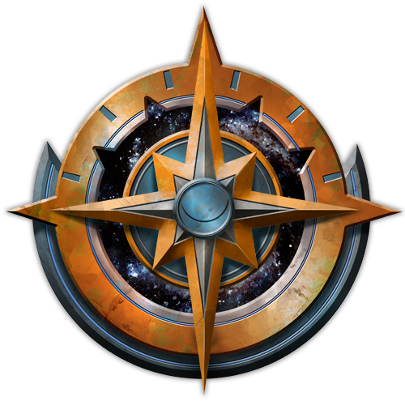

Ruined Clouds
Still on the heels of the Devourer cult, the heroes head to a distant, uncharted star system, where they find the ruins of an ancient alien city floating in the atmosphere of a gas giant. Exploring the ruins, they encounter the local populace in the midst of a civil war
Arriving at the landing pad on a floating sky island named Istamak, the PC's are greeted with arrows and axes. Wielded by a group of tribal humanoids, they are quickly forced to intervene to save the lives of some of these inhabitants who appeared to be at war with each other.
Whilst thankful, these humanoids are clearly wary of the PC's and it takes some time and a little more violence to convince them the PC's are not out to get them, unlike the other recent visitors these Kish have recently received. Through hand gestures and a pigeon language created by Paulo and one of the Kish survivors, the party are able to piece together the recent events on this land. The cult of the devourer is a hair's breadth ahead of them and this time, the party witnesses the depravity of their destructive dogma. Once a rapport is established, they are swiftly led through the decaying and crumbling ruins of this ancient floating land.
Upon finding bloody remains down a side street, Fingers is so overcome at the sight of something they had hoped would stay in their dreams, that they are nearly killed by terrifying, flying creatures intent on feasting. Rey, acting swiftly, bundled up their companion and ran for the shelter of what looked to be an underpass. Using their deep understanding of the cosmic mysteries of the universe, Che brought down the entrance to the tunnel once their companions were safely inside, bravely sacrificing themselves for the good of the whole universe.
The PC's continue following their Kish companion deeper and deeper into this crumbling metropolis until they eventually arrive at a sanctuary for the followers of Talavet hidden behind towering cliffs and overgrown jungle
Here they are greeted by Herald Tyazal who welcomes the group to Coudspire Condominiums, a relic of the ancient race that once lived here. Speaking with Herald Tyazal. They discover that the cult were indeed here only a few days previous and the trail of destruction they have left behind has forever changed the fragile society of the remaining Kish (for this is how the locals refer to themselves. Literal meaning “Descendents of the great Kishalee”)
A schism has fractured the Kishalee with Huntmaster Xavro calling for isolation and an insurgency in their more warlike traits, opposed by the Herald Tyazal to whom their adoration of Talavet (God of community, self reliance and tradition) dictates that they should go the opposite direction, even when mourning the pillage and murder of their people at the hands of outsiders.
Tyazal explains that Chieftain Hoyfek has exiled her and her followers and placed all of the warrior Kish under Huntmaster Xavra's command. She warns against visiting Herth, the homeland of the Kish, as it will be heavily defended in preparation for another attack from the cult. The cult, she tells them, appeared a few days prior, destroying everything and everyone in their path. They made a beeline for The Temple Found and once done with whatever they had come for inside, left again. Chieftain Hoyfek instructed Huntmaster Xavro to close off the temple and defend it with his life
After some consideration, she believes that there may be another entrance that would be revealed to those that “walked with reverence in the steps of the ancient Kishalee.” She provides direction and aid to the party and reveals that many Kish attempt this pilgrimage to learn more of their wondrous antecedents. The House of Renewal and The Maze of Ghosts are marked on a map for the party.
The next morning, the party made haste to The House of Renewal, ensuring that they walked with reverence the entire way. Whether this has any effect is still unknown at this time.
Arriving at around midday on the steps of the House of renewal, they hear scuffling inside and decide to investigate…
Upon entering the room, they were ambushed by two Kish hiding under the sparse metal tables. Quickly concluding the fight with the local inhabitants, they discovered that these were members of Chieftain Hoyfek's clan who had not followed Herald Tyazl into exile. Theses two had traveled to the house of renewal with their gravely wounded companions to run the risk of renewal in the chambers within
The party decided to let the Kish leave unmolested (except for a little roughing up) and continued on their way. Unbeknownst to the group however, the two Kish had secretly feared the renewal ritual would not work and had placed a deadly trap leading into the chamber room. Ironically for the party, their astute attention to checking for traps and magical activity (whilst commendable and very smart to do) was not practiced enough to uncover the hidden spike trap that had been left as a safeguard against whatever the Kish believed may emerge from the healing chamber. 5TEV1, the party's long term wonder drone took the full force of the detonation to the chassis and was subsequently knocked out of action. Others suffered some damage to a greater or lesser degree and barely a moment of reprieve came before they were set upon by the recombobulated remains of the injured Kish who had sought rejuvenation in this chamber. The creatures had been turned inside out and upside down as well as having numerous other forms of DNA rearranged and stitched back together. Existence had since become a thing of suffering for these pitiful creatures and upon seeing the party, immediately attacked.
Whilst the fight was eventually won by the party, they had all suffered greatly and were beginning to feel the sting of their trials and travels. Whilst they hope soon to find something to help in their objective of gaining entrance into the Temple Found, for now, they must tend their wounds as best they can before pushing further into this lost relic of the Kishalee
Splintered Worlds
Tracking the Cult of the Devourer, the heroes travel to the asteroid belt called the Diaspora, but they must face space pirates and other treacherous dangers of the asteroid field to find the cult's hidden command post. What the heroes learn in the Field of the Lost takes them to the dead world of Eox, where they must survive both the undead inhabitants of the planet and clandestine agents of the officially disavowed Corpse Fleet. Only then do the heroes learn that the Devourer cult is headed for a distant star system in search of clues to the location of an alien superweapon!
Tracking the Cult of the Devourer from Castrovel, the PCs travel to the scattered worldlets of the Diaspora to investigate the cult's secret asteroid base. Upon locating the base, however, they discover that the cult has abandoned it. The PCs can find no details about why the cult left the base or where they might have gone, but the PCs do find evidence that the Corpse Fleet has also visited the base, along with indications that the Corpse Fleet may have stolen and deleted files from the base's computer systems.
With new evidence of the Corpse Fleet's involvement, the party travels to Eox to investigate the exiled navy and to research alien superweapons, as Eox is the only Pact World to have developed such a weapon. Although Eox's government has supposedly disavowed the Corpse Fleet, the reality is more nuanced, and as the PCs undertake research and question various Eoxian officials to find the truth, Corpse Fleet agents oppose them at every step. Eventually, the PCs recover the Devourer cult's files from the Corpse Fleet agents, learning from them that the Cult of the Devourer abandoned its Diaspora base to search for the Stellar Degenerator in a distant star system called Nejeor.
Temple Of The Twelve
Now members of the Starfinder Society and piloting their very own ship, the heroes head to the planet Castrovel, home of some of the best universities in the Pact Worlds, to research the clues they found on the mysterious asteroid called the Drift Rock. On Castrovel, the adventurers' findings point them toward an ancient elven temple-city called the Temple of the Twelve, lost deep within Castrovel's teeming wilderness. But in addition to the dangerous flora and fauna of the jungle, the heroes must contend with two other factions—the exiled Corpse Fleet of Eox and the Cult of the Devourer—who are also interested in the asteroid's secrets and have their own plans for the ancient alien technology behind it, if they can find it first!
Now in possession of a ship, the Sunrise Maiden, the PCs must battle their way off the Drift Rock, eventually finding out that the exiled Corpse Fleet of Eox was behind the attack. Eager for more information about the Drift Rock's origins, the party travels to Castrovel, home of some of the best universities in the Pact Worlds. In Qabarat, one of Castrovel's most powerful lashunta city-states and the planet's primary spaceport, the PCs must navigate the politics of academia at the esteemed University of Xenoarchaeology and Xenoanthropology. Eventually, the characters uncover an obscure pre-Gap reference to an ancient, forgotten, elven temple-city on Castrovel called the Temple of the Twelve, which had supposedly found evidence of an advanced extraterrestrial civilization long ago.
In search of the Temple of the Twelve, the PCs must embark on an overland journey through the teeming jungles of Castrovel's western continent, facing some of the planet's dangerous flora and fauna, as well as members of the Cult of the Devourer, who are likewise interested in the Drift Rock's secrets and have followed the PCs to Castrovel. Upon reaching the abandoned and overgrown elven temple-city, the characters must contend with Castrovelian Devourer cultists who have taken over much of the crumbling ruins. After exploring the ruins, the PCs learn that the elves had discovered an almost unimaginably immense megastructure called the Gate of Twelve Suns, which relates in some way to the Drift Rock and, potentially, to an ancient alien superweapon. Unfortunately, the Cult of the Devourer is now also looking for the Gate of Twelve Suns, and though the PCs might have defeated the cult's agents on Castrovel, those cultists were receiving their orders from a secret asteroid base in the Diaspora.
A Ship Without a Crew
When a brutal gang war breaks out on a docking bay in Absalom Station, the player characters are recruited by the Starfinder Society to investigate the unexpected bloodshed. Delving into the station's seedy Spike neighborhoods, the heroes confront the gangs and discover that both were paid to start the riot and that the true conflict is between two rival mining companies battling over a new arrival in orbit around the station: a mysteriously deserted ship and the strange asteroid it recovered from the Drift. To head off further violence, the heroes are asked to investigate the ship and discover what happened to its crew, as well as the nature of the asteroid it tows. But what the players find there will set in motion events that could threaten the entirety of the Pact Worlds and change the face of the galaxy forever...
A deserted ship named the Acreon arrives at Absalom Station from hyperspace, towing behind it a mysterious asteroid dubbed the Drift Rock. The PCs come to Absalom Station to join the Starfinder Society but soon find themselves caught up in a gang war instigated by two factions—the Hardscrabble Collective, the scrappy mining clan that owns the Acreon; and Astral Extractions, the large corporation that hired the ship.
With both factions vying to claim the ship and the asteroid, the Starfinder Society hires the PCs to investigate the death of one of its members caught in the gangs' crossfire. After exploring some of Absalom Station and dealing with the gangs, the PCs are hired by Gevalarsk Nor, Eox's ambassador to Absalom Station, who is serving as a mediator between the factions. The PCs' job: to explore the Acreon and the Drift Rock and learn what happened to the crew.
The PCs take a shuttle to the quarantined Acreon, but one of the warring factions sends a ship to attack them, giving them their first taste of starship combat. The PCs can find no trace of the deserted mining ship's crew, but they do find the ship infested with alien monsters and opportunistic scavengers. The PCs continue their explorations on the Drift Rock, which is honeycombed with tunnels and rooms, and learn the final fate of the Acreon's crew, while also dealing with an extraterrestrial monster that inhabits the asteroid. The PCs eventually learn that the asteroid is incredibly ancient and that it is a fragment of some larger alien structure or artifact, perhaps a weapon, though its exact nature remains an enigma.
They also discover the Sunrise Maiden, a ship lost in hyperspace 75 years ago, which they can claim for themselves. But as soon as the PCs leave the Drift Rock in their new starship, they come under attack from a mysterious ship!